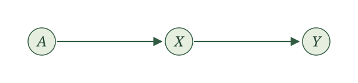
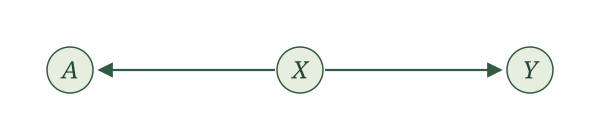
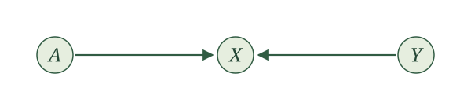
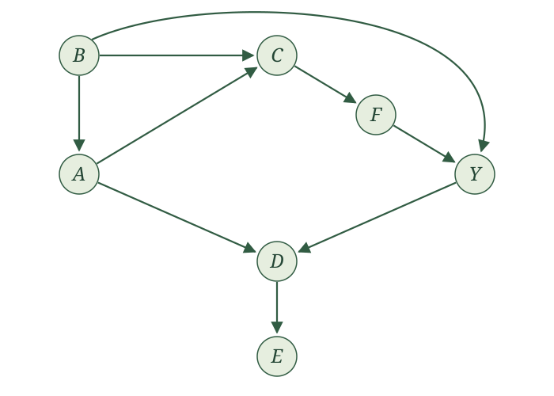
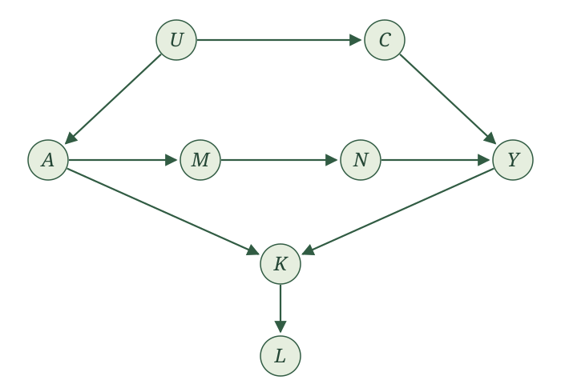
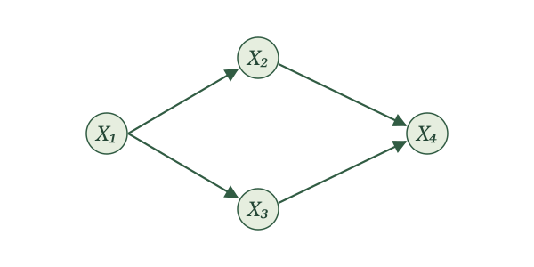

Global Markov property
Introduction
We now have a graph showing how the variables in our story are connected. Those connections give associations an origin story. If learning one variable tells us something about another, we can look through the graph for the paths along which that information might have traveled. (Recall that a path is a sequence of distinct nodes connected by arrows; we may follow those arrows in either direction.)
Why study associations in a book about cause and effect? Associations are what we encounter in data. We observe that variables are related, perhaps even after conditioning on other variables. Since we care about how the world generated those variables, we would like to understand how those associations came about.
The graph gives us a way to do that, but we need to be systematic. There may be several paths between two variables, and conditioning can change which paths transmit association. In this section, we develop a principled way to examine those paths and determine what independence and conditional-independence relationships the graph implies.
By association, we mean dependence, and by dependence, we mean the variables are not independent. Meanwhile, association after conditioning means conditional dependence, which means the variables are not conditionally independent. We will use these precise terms throughout the rest of the section. We will return at the end to exactly what the graph can—and cannot—tell us.
Two variables
Begin with the smallest possible graph. Let \(A\) be an exposure and \(Y\) an outcome. Suppose the entire graph contains only these two variables, connected by an arrow.
The corresponding SCM has the form
\[ \begin{aligned} A&\leftarrow f_A(\epsilon_A),\\ Y&\leftarrow f_Y(A,\epsilon_Y), \end{aligned} \]
where \(\epsilon_A\) and \(\epsilon_Y\) are independent. The arrow tells us that \(A\) is an input to the assignment for \(Y\). So \(A\) and \(Y\) can move together: the value \(A\) takes can shape the value \(Y\) takes. Put differently, if we find out the value of \(A\), we may be able to make a better guess about \(Y\). It works in reverse too. If we find out the value of \(Y\), we may be able to make a better guess about \(A\). The two variables may be dependent.
To show that dependence is possible, a single example is enough. Let the noise terms be independent \(\operatorname{Bernoulli}(1/2)\) random variables and write
\[ A\leftarrow\epsilon_A, \qquad Y\leftarrow A+\epsilon_Y. \]
Using linearity of conditional expectation and independence of \(A\) and \(\epsilon_Y\), we obtain
\[ E[Y\mid A] =A+E[\epsilon_Y\mid A] =A+\frac12. \]
This conditional mean is \(1/2\) when \(A=0\) and \(3/2\) when \(A=1\). It varies with \(A\), so \(A\) and \(Y\) are dependent.
Why is this enough? If \(A\) and \(Y\) were independent, then \(E[Y\mid A]=E[Y]\) whenever the expectation exists. A conditional mean that varies with \(A\) therefore establishes dependence. (The reverse argument does not generally work: a constant conditional mean alone does not establish independence.)
This single example establishes that the causal graph allows \(A\) and \(Y\) to be dependent.
Now consider a causal graph containing the same two variables but no arrow between them.
Here we claim that \(A\) and \(Y\) must be independent. To establish this, we need an argument that applies to every SCM with this graph. Such an SCM has the form
\[ A\leftarrow f_A(\epsilon_A), \qquad Y\leftarrow f_Y(\epsilon_Y), \]
with independent noise terms. We can apply the local Markov property using the topological order \(A,Y\). The variable \(A\) precedes \(Y\), and \(Y\) has no parents. Thus,
\[ Y\perp\!\!\!\perp A\mid\varnothing. \]
The empty set \(\varnothing\) means that we are conditioning on no variables. This is simply independence:
\[ A\perp\!\!\!\perp Y. \]
The assignments also explain why: \(A\) and \(Y\) are functions of separate independent noise terms. Taking functions of those noise terms preserves their independence. This argument applies to every SCM with this two-variable graph.
With only two variables, that’s it.
Three variables
Once other variables enter the graph, however, \(A\) and \(Y\) can be connected even when there is no arrow directly between them. To understand how that can happen, we will start with three arrangements: chains, forks, and colliders. These are the building blocks of paths through a graph. Once we understand each one, including what happens when we condition on its middle variable, we can combine them to study more complicated graphs.
Suppose a third variable \(X\) lies between the exposure \(A\) and outcome \(Y\). In each of the following graphs, \(A\) and \(X\) are connected by an arrow, and \(X\) and \(Y\) are connected by an arrow. The directions of the two arrows determine whether \(X\) is part of a chain, a fork, or a collider. Each displayed three-variable graph is the entire graph for its example.
Chain

A chain has one arrow entering the middle variable and one arrow leaving it. Here the arrows form a directed path from \(A\), through \(X\), to \(Y\):
\[ A\to X\to Y. \]
The corresponding SCM is
\[ \begin{aligned} A&\leftarrow f_A(\epsilon_A),\\ X&\leftarrow f_X(A,\epsilon_X),\\ Y&\leftarrow f_Y(X,\epsilon_Y), \end{aligned} \]
where \(\epsilon_A,\epsilon_X,\epsilon_Y\) are independent.
We call the variable \(X\) a mediator of the \(A\)-\(Y\) relationship. Consider three binary variables:
- \(A=1\) if you set an alarm for 9 a.m.
- \(X=1\) if you get out of bed by 9:01 a.m.
- \(Y=1\) if you arrive on time for your 10 a.m. class.
Getting out of bed by 9:01 mediates the relationship between setting the alarm and arriving on time. \(A\) goes into the assignment for \(X\), and \(X\) goes into the assignment for \(Y\), so \(A\) can influence \(Y\) even though it is not an input to \(Y\)’s assignment.
To demonstrate that \(A\) and \(Y\) can be dependent, consider a simple model. You set the alarm with probability \(1/2\). You get out of bed by 9:01 with probability \(3/4\) if you set the alarm and \(1/4\) otherwise. You arrive on time with probability \(3/4\) if you get out of bed by 9:01 and \(1/4\) otherwise, regardless of whether you set the alarm.
We can write these assignments using Bernoulli draws:
\[ \begin{aligned} A&\leftarrow\operatorname{Bernoulli}(1/2),\\ X&\leftarrow\operatorname{Bernoulli}(1/4+A/2),\\ Y&\leftarrow\operatorname{Bernoulli}(1/4+X/2). \end{aligned} \]
Each draw uses fresh independent randomness; its probability of being one depends on the parents shown in its assignment. In particular,
\[ E[X\mid A]=\frac14+\frac A2, \qquad E[Y\mid X,A]=\frac14+\frac X2. \]
To find \(E[Y\mid A]\), first condition on both \(X\) and \(A\), then average over \(X\) conditional on \(A\). By iterated expectations,
\[ \begin{aligned} E[Y\mid A] &=E\!\left[E[Y\mid X,A]\mid A\right]\\ &=E\!\left[\frac14+\frac X2\mid A\right]\\ &=\frac14+\frac12E[X\mid A]\\ &=\frac14+\frac12\left(\frac14+\frac A2\right)\\ &=\frac38+\frac A4. \end{aligned} \]
The third line uses linearity of conditional expectation. Since \(Y\) is binary, its conditional mean is also the probability of arriving on time: \(3/8\) without the alarm and \(5/8\) with it. The mean varies with \(A\), so \(A\) and \(Y\) are dependent in this SCM. In words, you are more likely to arrive to class on time if you set an alarm! This single example establishes that a chain allows its endpoints to be dependent.
Now condition on the mediator \(X\). For any SCM with this three-variable graph, the local Markov property applies with topological order \(A,X,Y\). The only parent of \(Y\) is \(X\), while \(A\) precedes \(Y\) and is not a parent. Therefore,
\[ Y\perp\!\!\!\perp A\mid X. \]
In the alarm example, once we know whether you got out of bed by 9:01, knowing whether you set the alarm provides no additional information about arriving on time. Among those who got up by 9:01, the probability is \(3/4\) with or without an alarm; among those who did not, it is \(1/4\) with or without an alarm. This reflects the model’s assumption that the alarm affects arrival only through getting out of bed by 9:01.
More generally, the assignment for \(Y\) uses \(X\) and \(\epsilon_Y\). Once \(X\) is fixed, the remaining randomness comes from \(\epsilon_Y\), which is independent of \((A,X)\). The conditional-independence conclusion therefore holds for the general chain, not just our numerical example.
The reverse orientation, \(A\leftarrow X\leftarrow Y\), is also a chain: one arrow enters the middle node and one leaves it. Our displayed chain uses \(A\to X\to Y\) because it has the natural interpretation of a mediator between an exposure and an outcome.
Fork

A fork has two arrows leaving the middle variable:
\[ A\leftarrow X\to Y. \]
Here \(X\) is a common cause of \(A\) and \(Y\), also called a confounder of the \(A\)-\(Y\) relationship. For example, blood pressure may affect both whether a patient receives RHC and whether the patient dies.
The corresponding SCM is
\[ \begin{aligned} X&\leftarrow f_X(\epsilon_X),\\ A&\leftarrow f_A(X,\epsilon_A),\\ Y&\leftarrow f_Y(X,\epsilon_Y), \end{aligned} \]
where \(\epsilon_X,\epsilon_A,\epsilon_Y\) are independent. Without conditioning on \(X\), the common cause can make \(A\) and \(Y\) dependent. A single example is enough to demonstrate this possibility.
Can you construct an SCM with this fork in which \(A\) and \(Y\) are dependent?
One simple choice is
\[ X\leftarrow\operatorname{Bernoulli}(1/2), \qquad A\leftarrow X, \qquad Y\leftarrow X. \]
The assignments for \(A\) and \(Y\) are deterministic: they copy \(X\) and do not use their own noise terms. This is allowed in an SCM with independent noise terms.
Because \(Y=A\),
\[ E[Y\mid A]=A. \]
The conditional mean is zero when \(A=0\) and one when \(A=1\). It varies with \(A\), so \(A\) and \(Y\) are dependent.
Now condition on the common cause \(X\). For any SCM with this three-variable graph, apply the local Markov property with topological order \(X,A,Y\). The only parent of \(Y\) is \(X\), and \(A\) precedes \(Y\) without being a parent. Thus,
\[ Y\perp\!\!\!\perp A\mid X. \]
Once \(X\) is known, the remaining randomness in \(A\) and \(Y\) comes from separate independent noise terms. Learning \(A\) therefore gives no additional information about \(Y\). In the dropdown example, knowing \(X\) determines both variables completely; in the general fork, they need not be deterministic given \(X\).
Collider

A collider has two arrows entering the middle variable:
\[ A\to X\leftarrow Y. \]
The arrows collide at \(X\), making \(X\) a common effect of \(A\) and \(Y\). The corresponding SCM is
\[ \begin{aligned} A&\leftarrow f_A(\epsilon_A),\\ Y&\leftarrow f_Y(\epsilon_Y),\\ X&\leftarrow f_X(A,Y,\epsilon_X), \end{aligned} \]
where \(\epsilon_A,\epsilon_Y,\epsilon_X\) are independent.
Here \(A\) and \(Y\) are independent. To see this, apply the local Markov property with topological order \(A,Y,X\). The variable \(A\) precedes \(Y\), and \(Y\) has no parents. Therefore,
\[ Y\perp\!\!\!\perp A\mid\varnothing, \qquad\text{or simply}\qquad A\perp\!\!\!\perp Y. \]
As in the disconnected two-variable graph, \(A\) and \(Y\) are generated from separate independent noise terms. Having a common effect does not change their independence.
But \(A\) and \(Y\) may be conditionally dependent given \(X\). To demonstrate this possibility, consider a simplified model of studying, luck, and grades:
- \(A=1\) if you study for an exam.
- \(Y=1\) if you have good luck on the exam.
- \(X=1\) if you get a good grade.
Suppose studying and luck are independent, each with probability \(1/2\), and a good grade requires both:
\[ A\leftarrow\operatorname{Bernoulli}(1/2), \qquad Y\leftarrow\operatorname{Bernoulli}(1/2), \qquad X\leftarrow AY. \]
The two Bernoulli draws use independent randomness. The grade assignment is deterministic and does not use an additional noise term.
Now suppose you did not get a good grade: \(X=0\). If you studied (\(A=1\)), then \(X=AY=Y\). Your lack of a good grade tells us that \(Y=0\): you did not have good luck. Consequently,
\[ E[Y\mid X=0,A=1]=0. \]
If you did not study (\(A=0\)), then \(X=0\) regardless of your luck. Learning that you did not get a good grade tells us nothing further about \(Y\). Luck remains a Bernoulli variable with probability \(1/2\), so
\[ E[Y\mid X=0,A=0]=\frac12. \]
At the same value \(X=0\), learning whether you studied changes the conditional mean of luck. In particular,
\[ E[Y\mid X=0,A=1]\neq E[Y\mid X=0,A=0]. \]
If \(Y\) and \(A\) were conditionally independent given \(X\), then \(E[Y\mid X,A]=E[Y\mid X]\). The unequal conditional means show that this does not hold. Thus, although \(A\) and \(Y\) are independent, they are not conditionally independent given \(X\) in this example.
The example establishes that conditioning on a collider can make its parents conditionally dependent. This is an example of collider bias.
The table below summarizes what each arrangement tells us about independence between \(A\) and \(Y\), before and after conditioning on \(X\). Each row treats the displayed three-variable graph as the entire graph.
| Structure | Role of \(X\) | Without conditioning on \(X\) | After conditioning on \(X\) |
|---|---|---|---|
| Chain: \(A\to X\to Y\) | Mediator | \(A\) and \(Y\) may be dependent | \(A\perp\!\!\!\perp Y\mid X\) |
| Fork: \(A\leftarrow X\to Y\) | Common cause | \(A\) and \(Y\) may be dependent | \(A\perp\!\!\!\perp Y\mid X\) |
| Collider: \(A\to X\leftarrow Y\) | Common effect | \(A\perp\!\!\!\perp Y\) | \(A\) and \(Y\) may be conditionally dependent |
In chains and forks, the outer variables may be dependent, but they are conditionally independent given the middle variable. In a collider, the outer variables are independent, but they can become conditionally dependent given the middle variable.
Paths
Chains, forks, and colliders are the building blocks of longer paths. As we move along a path, each internal variable is the middle of a chain, a fork, or a collider. What can these building blocks tell us about the variables at the two ends?
We will start with a few simple causal graphs, each with just one path between \(A\) and \(Y\). Consider
\[ A\to C\to F\to Y. \]
This path contains two overlapping chains: \(A\to C\to F\) and \(C\to F\to Y\). Their middle variables are \(C\) and \(F\), respectively.
The endpoints \(A\) and \(Y\) may be dependent. But conditioning on the middle variable of either chain makes them conditionally independent:
\[ A\perp\!\!\!\perp Y\mid C, \qquad A\perp\!\!\!\perp Y\mid F. \]
Can we give an example where \(A\) and \(Y\) are dependent without conditioning?
Let \(A\) be a fair coin flip, and let each remaining variable copy its parent:
\[ C\leftarrow A,\qquad F\leftarrow C,\qquad Y\leftarrow F. \]
Then \(Y=A\), so learning \(A\) tells us \(Y\) exactly. In particular,
\[ P(Y=1)=\frac12, \qquad P(Y=1\mid A=1)=1. \]
Thus, \(A\) and \(Y\) are dependent in this SCM.
Now consider
\[ A\leftarrow B\to C\to F\to Y. \]
This path contains a fork, \(A\leftarrow B\to C\), followed by two chains, \(B\to C\to F\) and \(C\to F\to Y\). Their middle variables are \(B\), \(C\), and \(F\).
Again, \(A\) and \(Y\) may be dependent. But conditioning on any one of these middle variables makes them conditionally independent:
\[ A\perp\!\!\!\perp Y\mid B, \qquad A\perp\!\!\!\perp Y\mid C, \qquad A\perp\!\!\!\perp Y\mid F. \]
What changes when the path contains a collider? Consider
\[ A\to C\leftarrow B\to Y. \]
Here \(C\) is the middle of a collider, and \(B\) is the middle of a fork. Because of the collider, the endpoints are independent without conditioning:
\[ A\perp\!\!\!\perp Y. \]
Conditioning on \(C\) can make \(A\) and \(Y\) conditionally dependent.
Can we give an example where conditioning on \(C\) makes \(A\) and \(Y\) conditionally dependent?
Let \(A\) and \(B\) be independent fair coin flips, and set
\[ C\leftarrow A+B, \qquad Y\leftarrow B. \]
Among observations with \(C=1\), exactly one of \(A,B\) equals one. Since \(Y=B\), learning \(A\) tells us \(Y\): if \(A=0\), then \(Y=1\); if \(A=1\), then \(Y=0\). Thus,
\[ P(Y=1\mid C=1)=\frac12, \qquad P(Y=1\mid C=1,A=0)=1. \]
Learning \(A\) changes the distribution of \(Y\) once we condition on \(C=1\). Therefore, \(A\) and \(Y\) are conditionally dependent given \(C\) in this SCM.
But what if we condition on both \(C\) and \(B\)? Conditioning on the collider can allow dependence, but we are also conditioning on the middle of the fork. That is enough to make the endpoints conditionally independent:
\[ A\perp\!\!\!\perp Y\mid B,C. \]
Thus, conditioning on a collider does not undo the effect of conditioning on a middle variable in a chain or fork elsewhere along this path.
There is one more possibility that our three-variable examples could not show. Consider
\[ A\to D\leftarrow Y, \qquad D\to F. \]
The path between \(A\) and \(Y\) contains the collider \(D\), so \(A\perp\!\!\!\perp Y\). Conditioning on \(D\) can make the endpoints conditionally dependent. But what about conditioning on \(F\)?
Learning \(F\) can give us information about \(D\). For example, the assignment could be \(F\leftarrow D\). Knowing \(F\) would then tell us \(D\) exactly, so conditioning on \(F\) would have the same effect as conditioning on \(D\).
Thus, leaving the collider itself out of the conditioning collection is not enough. To retain this independence guarantee, we must also leave out its descendants.
These examples suggest two ways to prevent dependence along a path. We can condition on a middle variable in a chain or fork. Or the path can contain a collider with neither it nor any of its descendants conditioned on. We call a path blocked, or closed, when either condition holds. Otherwise, we call it open.
Blocked and open paths. A path between \(A\) and \(Y\) is blocked by a collection of variables other than its endpoints if at least one of the following holds:
- A middle variable in a chain or fork along the path is conditioned on.
- A collider along the path is not conditioned on, and none of its descendants is conditioned on.
If neither condition holds, the path is open conditional on that collection.
Let’s apply this definition. For the path
\[ A\leftarrow U\to V\to Y, \]
\(U\) is the middle of a fork and \(V\) is the middle of a chain. The path is open without conditioning. Conditioning on \(U\), on \(V\), or on both blocks it.
For the path \(A\to U\leftarrow V\to Y\), which collections chosen from \(U,V\) block the path?
Without conditioning, the collider \(U\) blocks the path. Conditioning on \(U\) alone opens it. Conditioning on \(V\) blocks the path at the fork, whether or not we also condition on \(U\).
Thus, the path is blocked when we condition on nothing, on \(V\), or on both \(U,V\). It is open when we condition on \(U\) alone.
Now add the arrow \(U\to Z\). Which collections chosen from \(U,V,Z\) block the path \(A\to U\leftarrow V\to Y\)?
Conditioning on either \(U\) or its descendant \(Z\) removes the blockage at the collider. But conditioning on \(V\) always blocks this path.
The path is therefore blocked when we condition on nothing or on any collection containing \(V\): \(V\); \(U,V\); \(V,Z\); or \(U,V,Z\).
It is open when we condition on \(U\), on \(Z\), or on \(U,Z\).
Suppose an SCM has a topological order and exactly one path between \(A\) and \(Y\). Let \(S\) denote the collection of variables we condition on, excluding \(A\) and \(Y\). We will prove that either condition in the definition gives
\[ A\perp\!\!\!\perp Y\mid S. \]
The graph may contain other variables and branches. The important assumption is that there is only one path between the two endpoints.
We use two elementary facts about independence:
- Functions of disjoint collections of mutually independent noise terms are independent.
- If two collections of variables are conditionally independent given \(V\), conditioning additionally on variables from each collection preserves independence between what remains in the two collections.
For the second fact, imagine fixing \(V=v\). The joint distribution of the two collections factors into a distribution for each collection. Conditioning separately on information from each collection preserves that factorization. The same statement applies without \(V\) when the collections are independent to begin with.
1. Conditioning on a middle variable in a chain or fork.
Let \(V\) be such a variable on the unique path, and suppose \(V\) is in \(S\). Since \(V\) is not a collider on this path, at least one of its two adjacent arrows points away from it. Choose that side of the path.
Temporarily remove \(V\) from the drawing and let \(R\) be the entire connected piece on the chosen side. Let \(L\) contain all remaining variables other than \(V\). One endpoint lies in \(R\) and the other lies in \(L\).
There is exactly one edge between \(V\) and \(R\), and it points from \(V\) into \(R\). Why exactly one? Another edge from \(V\) into the same connected piece would provide another route to the endpoint on that side, giving a second path between \(A\) and \(Y\). Likewise, there are no edges between \(R\) and \(L\); otherwise removing \(V\) would not have separated the endpoints.
Consequently, the only input into the assignments in \(R\) from outside \(R\) is \(V\). Substituting assignments in topological order lets us write the entire collection as
\[ R\leftarrow h(V,\epsilon_R), \]
where \(\epsilon_R\) collects the noise terms belonging to variables in \(R\).
No variable in \(R\) is a parent of a variable outside \(R\). Thus, \(V,L\) are functions only of noise terms outside \(R\). Mutual independence of the SCM’s noise terms gives
\[ \epsilon_R\perp\!\!\!\perp (V,L). \]
Once \(V\) is known, the remaining randomness determining \(R\) is therefore independent of \(L\). Hence,
\[ R\perp\!\!\!\perp L\mid V. \]
Any additional variables in \(S\) belong to \(R\) or \(L\). Conditioning on those variables preserves conditional independence between the two collections. Since \(A\) and \(Y\) lie on opposite sides and are not themselves conditioned on,
\[ A\perp\!\!\!\perp Y\mid S. \]
This proves the first blocking rule, including situations where we also condition on colliders elsewhere along the path.
2. A collider with neither it nor any descendant conditioned on.
Let \(V\) be a collider on the unique path, and suppose neither \(V\) nor any of its descendants is in \(S\).
First, neither endpoint can be a descendant of \(V\). A directed path from \(V\) to either endpoint would give a second route to that endpoint: it cannot follow the original path, whose adjacent arrow points into \(V\). Combining that route with the original path would contradict uniqueness of the path between \(A\) and \(Y\).
Now remove \(V\) and all its descendants. This removes neither endpoint nor any variable in \(S\).
It also leaves a valid system of assignments for the remaining variables. No removed variable can be a parent of a remaining variable: a child of \(V\) or of one of its descendants would itself be a descendant and would have been removed. We can therefore generate all remaining variables without using any of the removed assignments or noise terms.
The remaining graph has no path between \(A\) and \(Y\), because their unique path passed through \(V\). They now belong to different connected pieces. Each piece is generated from its own collection of noise terms, and those noise collections are mutually independent. Thus, the collections of variables in the different pieces are independent.
Every variable in \(S\) belongs to one of these remaining pieces. Conditioning on variables within the separate pieces preserves their independence. In particular,
\[ A\perp\!\!\!\perp Y\mid S. \]
This proves the second blocking rule.
Both arguments rely on there being only one path between the endpoints. In a larger graph, blocking one path is not enough if another path remains open.
Multiple paths
What happens when there is more than one path between \(A\) and \(Y\)? A blocked path is no longer enough to guarantee independence: another path may remain open. We need to consider all of them.
Consider the following causal graph.

There are five paths between \(A\) and \(Y\):
- \(A\to C\to F\to Y\).
- \(A\leftarrow B\to C\to F\to Y\).
- \(A\leftarrow B\to Y\).
- \(A\to D\leftarrow Y\).
- \(A\to C\leftarrow B\to Y\).
When we condition on nothing, paths (1), (2), and (3) are open: they contain only chains and forks. Path (4) is blocked by its collider \(D\), and path (5) is blocked by its collider \(C\). There are open paths between the endpoints, so \(A\) and \(Y\) may be dependent.
How might we make \(A\) and \(Y\) conditionally independent? Our single-path examples suggest conditioning on middle variables in chains or forks. But now we need a collection that blocks every path.
Paths (4) and (5) are already blocked, so start with paths (1), (2), and (3):
- On path (1), conditioning on \(C\) blocks a chain.
- On path (2), conditioning on \(B\) blocks a fork, and conditioning on \(C\) blocks a chain.
- On path (3), conditioning on \(B\) blocks a fork.
This suggests conditioning on \(B,C\). That blocks the three paths we were worried about. But we must also revisit paths (4) and (5): conditioning can open a path that was previously blocked.
Path (4), \(A\to D\leftarrow Y\), remains blocked. We are conditioning on neither its collider \(D\) nor its descendant \(E\).
Path (5), \(A\to C\leftarrow B\to Y\), needs more care. Conditioning on \(C\) removes the blockage at the collider. However, we are also conditioning on \(B\), the middle of a fork along the same path. That is enough to block it.
Thus, conditioning on \(B,C\) blocks all five paths:
| Path | Conditional on \(B,C\) |
|---|---|
| (1) \(A\to C\to F\to Y\) | Blocked at \(C\) |
| (2) \(A\leftarrow B\to C\to F\to Y\) | Blocked at \(B\) and \(C\) |
| (3) \(A\leftarrow B\to Y\) | Blocked at \(B\) |
| (4) \(A\to D\leftarrow Y\) | Blocked at \(D\) |
| (5) \(A\to C\leftarrow B\to Y\) | Blocked at \(B\) |
We say that \(B,C\) d-separates \(A\) and \(Y\). As we suspected, blocking every path gives us conditional independence:
\[ A\perp\!\!\!\perp Y\mid B,C. \]
This is the general strategy: find a collection of variables that blocks every path between the endpoints. The name for accomplishing this is d-separation.
d-separation. A collection of variables \(X_1,\ldots,X_k\), excluding the endpoints \(A\) and \(Y\), d-separates \(A\) and \(Y\) if it blocks every path between them.
The conditioning collection may be empty.
We now have a precise statement about the graph: every path between two variables is blocked by the conditioning collection. The global Markov property tells us what this implies about the random variables.
Global Markov property. Suppose an SCM admits a topological order. If \(X_1,\ldots,X_k\) d-separates \(A\) and \(Y\) in its causal graph, then
\[ A\perp\!\!\!\perp Y\mid X_1,\ldots,X_k. \]
If the conditioning collection is empty, the conclusion is \(A\perp\!\!\!\perp Y\).
d-separation is a statement about paths in a graph. Conditional independence is a statement about random variables. The global Markov property connects the two.
To-do: add the full proof. The single-path argument above establishes the result when there is exactly one path between the endpoints. The general proof must account for multiple paths that can share variables.
In Figure 1, why is conditioning on \(C\) alone insufficient to d-separate \(A\) and \(Y\)?
Conditioning on \(C\) blocks paths (1) and (2), but path (3), \(A\leftarrow B\to Y\), remains open.
It also opens path (5), \(A\to C\leftarrow B\to Y\), by conditioning on its collider. Since \(B\) is not conditioned on, nothing else blocks that path.
Path (4) remains blocked at \(D\). But two paths remain open, so \(C\) does not d-separate \(A\) and \(Y\).
Let’s work through another example.

There are three paths between \(A\) and \(Y\):
- \(A\leftarrow U\to C\to Y\).
- \(A\to M\to N\to Y\).
- \(A\to K\leftarrow Y\).
To block the first path, we could condition on either \(U\) or \(C\). To block the second, we could condition on either \(M\) or \(N\). The third path is already blocked by its collider \(K\), provided we condition on neither \(K\) nor its descendant \(L\).
Choose \(C,M\). Conditioning on \(C\) blocks the first path, and conditioning on \(M\) blocks the second. The third remains blocked at \(K\). Thus, \(C,M\) d-separates \(A\) and \(Y\). The SCM has topological order \(U,A,C,M,N,Y,K,L\), so the global Markov property gives
\[ A\perp\!\!\!\perp Y\mid C,M. \]
This is not a direct application of the local Markov property to either endpoint. The parent of \(A\) is \(U\), while the parents of \(Y\) are \(C,N\). Our conditioning collection \(C,M\) is neither parent set. Examining paths lets us find other collections that guarantee conditional independence.
What if we also condition on \(L\)? This opens the third path through its collider \(K\), because \(L\) is a descendant of \(K\). The first two paths remain blocked, but that is no longer enough. The collection \(C,M,L\) does not d-separate \(A\) and \(Y\), so the global Markov property does not guarantee conditional independence for this collection. It does not establish conditional dependence either.
These examples give us a systematic approach:
- List every path between the two variables of interest.
- Check each path under the proposed conditioning collection. A conditioned middle variable in a chain or fork blocks the path. So does a collider with neither itself nor any descendant conditioned on.
- Check whether every path is blocked. If so, the conditioning collection d-separates the endpoints.
- Apply the global Markov property to conclude conditional independence. If a path remains open, the property gives no conclusion about independence or dependence.
When choosing variables to condition on, check every path again after choosing them. Conditioning that blocks one path may open another.
What the graph does not guarantee
d-separation gives us a guarantee: if the graph blocks every path, the corresponding random variables are conditionally independent. What happens when the graph leaves a path open?
An open path tells us that the variables can be dependent. It does not guarantee that they are. The particular assignment functions may make an input irrelevant, or contributions traveling along different paths may cancel one another.
Here is an example of exact cancellation. Consider
\[ \begin{aligned} X_1&\leftarrow N_1,\\ X_2&\leftarrow X_1+N_2,\\ X_3&\leftarrow X_1+N_3,\\ X_4&\leftarrow X_3-X_2+N_4, \end{aligned} \]
where the noise terms are mutually independent.

There are two open directed paths from \(X_1\) to \(X_4\). The graph therefore does not d-separate them. But substituting the assignments gives
\[ X_4=(X_1+N_3)-(X_1+N_2)+N_4 =N_3-N_2+N_4. \]
The contribution of \(X_1\) cancels exactly. Because \(X_1\) depends only on \(N_1\), while \(X_4\) depends only on \(N_2,N_3,\) and \(N_4\), we have
\[ X_1\perp\!\!\!\perp X_4. \]
Thus, conditional independence does not generally imply d-separation. A faithfulness assumption adds this reverse direction.
Faithfulness. A distribution is faithful to a causal graph if every conditional-independence relationship in the distribution is represented by d-separation in the graph. That is, whenever \(A\perp\!\!\!\perp B\mid C\), the collection \(C\) d-separates \(A\) and \(B\) in the causal graph.
Under faithfulness, d-separation and conditional independence agree in both directions. Faithfulness is an additional assumption, not something guaranteed by the SCM or its graph.
In many common model classes, including linear models, the parameter values that produce extra independences through exact cancellation form a very small set. This is one reason faithfulness is often treated as a reasonable working assumption. It becomes especially important when we try to learn a causal graph from observed conditional-independence relationships.